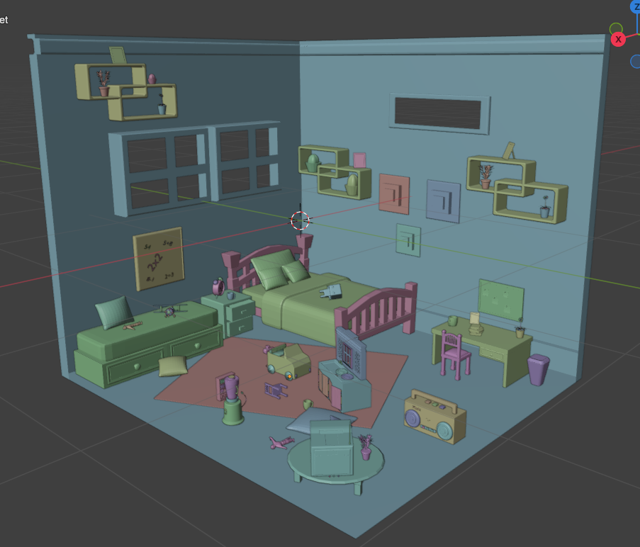
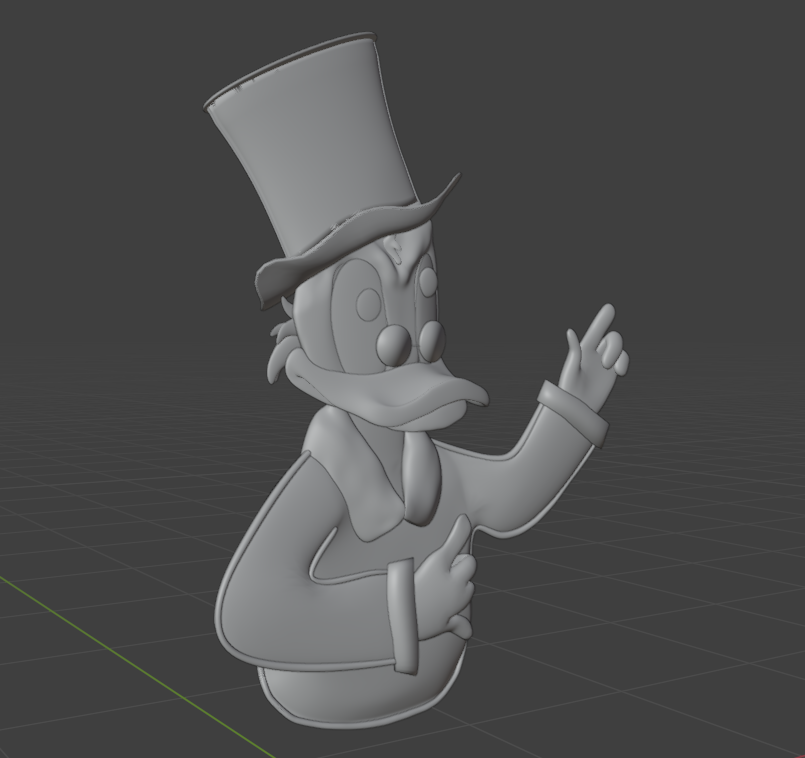
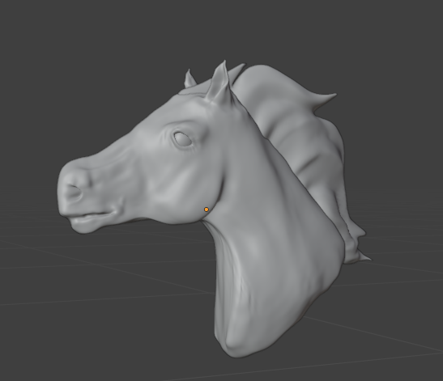
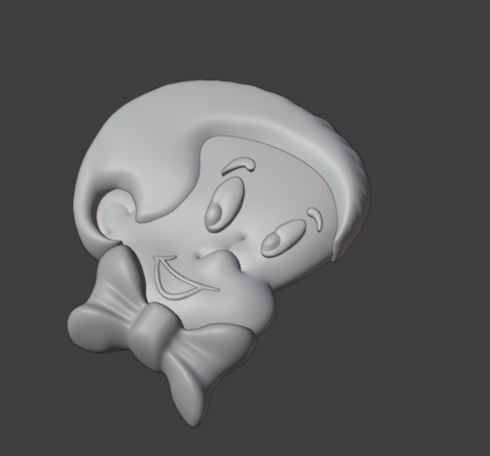
Cocina de Fisher-Price y más diseños en 3D
Modelado en Blender de una réplica de cocina de juguete Fisher-Price, junto con otros diseños 3D.
Portafolio
Estudiante de Ingeniería Multimedia en la UAO, vas a encontrar lo que he ido aprendiendo durante la carrera.
Ver proyectos ↓Blender
Cocina de Fisher-Price y mas diseños en 3D
Unity · Java · Páginas web
Proyectos interactivos
IA y sistemas embebidos
Proyectos funcionales
Pagina de rines 3D
Proyectos personales
01 — sobre mí
Estudiante de Ingeniería Multimedia (9° semestre) con formación técnica en programación de software. Experiencia en desarrollo web, modelado 3D y aplicaciones con inteligencia artificial y sistemas embebidos. He participado en proyectos como detección de huecos y basura mediante visión computacional, y una aplicación web para visualización de rines en 3D con realidad aumentada. Manejo lenguajes de programación como Python y Java, además de HTML y CSS para desarrollo web, y herramientas como Unity, Blender y Adobe Suite. Estoy interesada en aplicar mis conocimientos en una empresa donde pueda aportar soluciones tecnológicas innovadoras.
02 — proyectos




Cocina de Fisher-Price y más diseños en 3D
Modelado en Blender de una réplica de cocina de juguete Fisher-Price, junto con otros diseños 3D.
Rines en 3D con realidad aumentada
Aplicación web desarrollada para un cliente que fabrica rines que permite visualizar dos rines en 3D y personalizarlos con los colores y efectos diamantados disponibles en la empresa con un visor de realidad aumentada integrado en HTML para ver cómo quedarían en la vida real.
Detección de huecos y basura (Trabajo grupal)
SafeRoute es una aplicación web que permite clasificar el estado de una calle (Calle Buena, Grietas o Huecos) mediante una red neuronal CNN y detectar anomalías con un modelo YOLO.
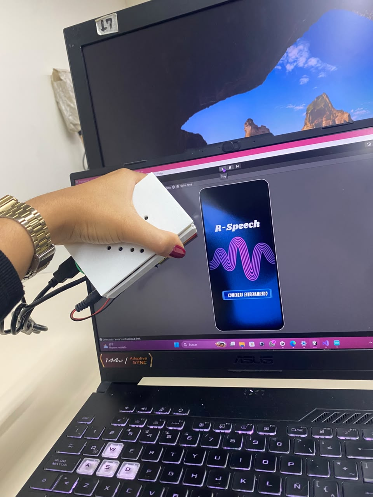
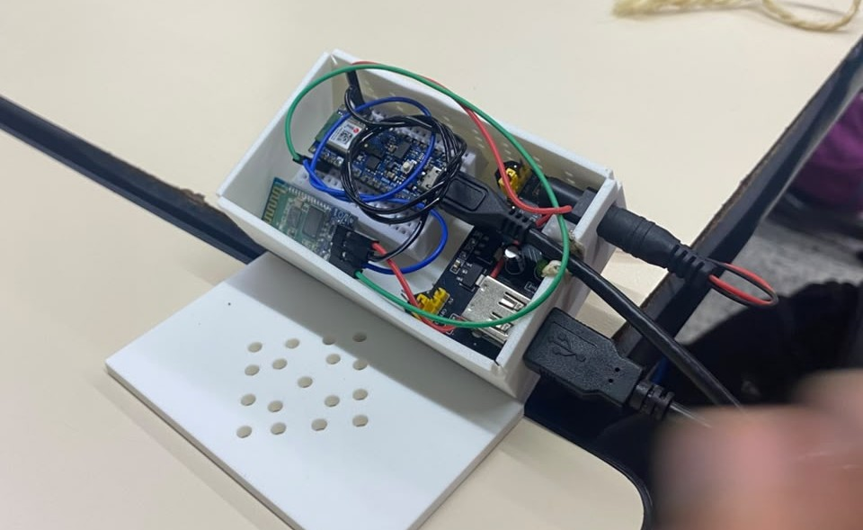
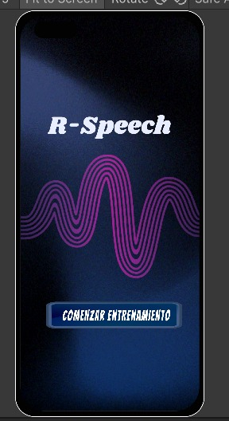
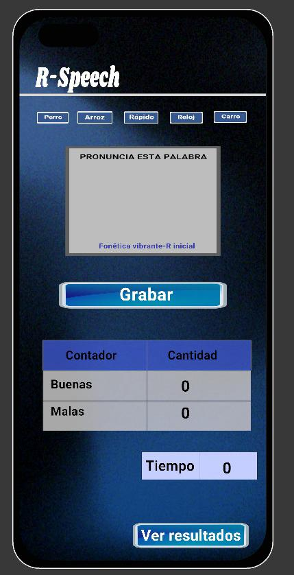
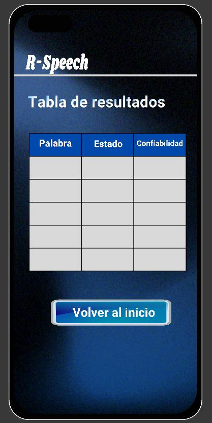
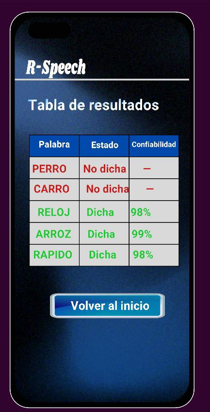
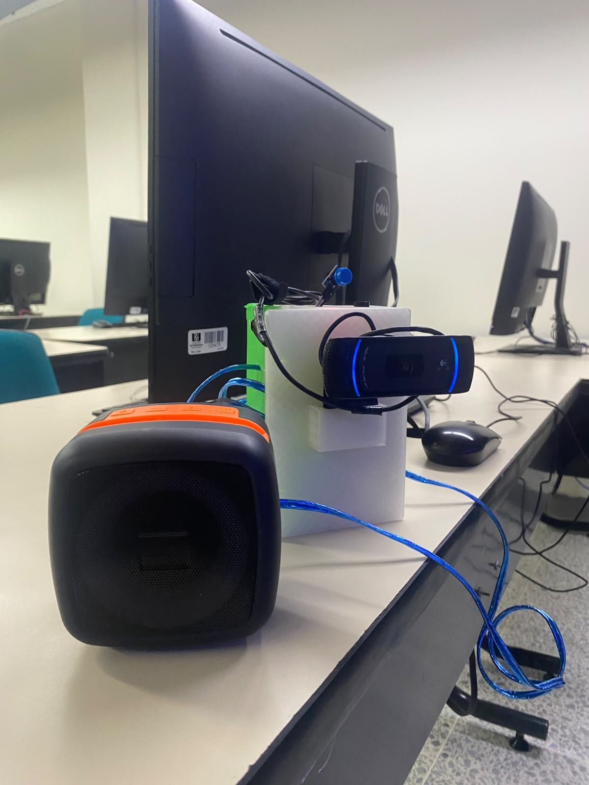
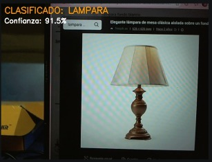
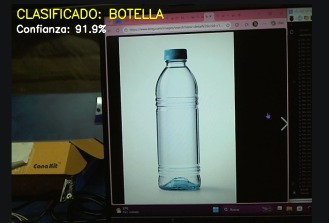
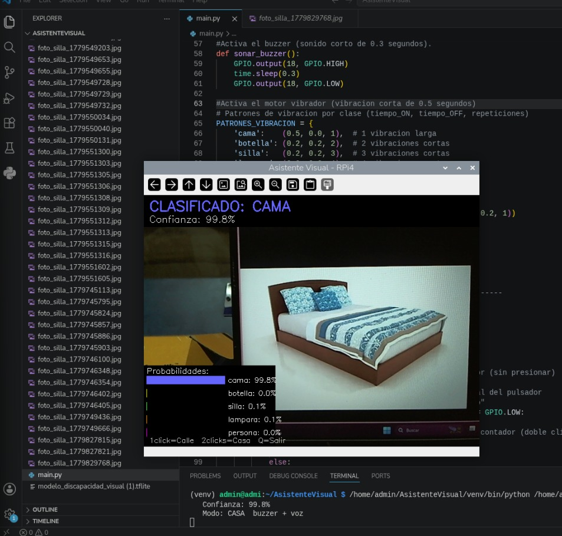
Sistemas embebidos con TinyML (Proyecto grupal)
Tres sistemas embebidos con TinyML aplicados a terapia y asistencia. El primero reconoce gestos en el aire con un Arduino y sensores inerciales para entrenar motricidad; el segundo, R-Speech, evalúa la pronunciación de la letra "R" mediante reconocimiento de voz; el tercero, SmartVision, usa visión artificial en una Raspberry Pi para asistir a personas con discapacidad visual.
Página web
Proyecto de backend y e-commerce de réplica de una plataforma bancaria (solo con fines educativos y de práctica) con login y registro de usuarios en Node.js, contraseñas encriptadas con bcrypt y conexión a MySQL y Velvet Glam una tienda online en WordPress con WooCommerce, carrito de compras y cálculo dinámico de envío por zonas.
Redes y servicios
Servicios como DNS y web, y arquitecturas de aplicaciones distribuidas.
Trabajos de unity
Recopilación de trabajos grupales e individuales desarrollados en Unity.
03 — herramientas
Escríbeme y armamos algo juntos.